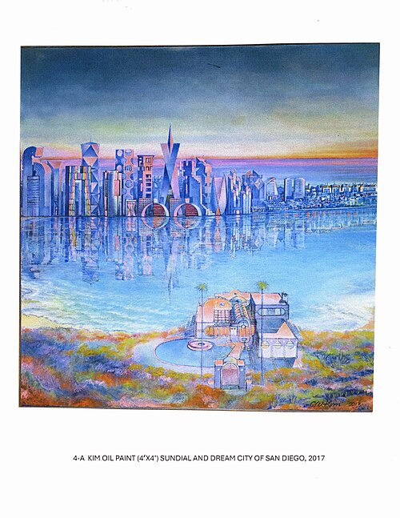

Name: Maximilian Pilz,
Geburtsdatum: 01.04.2011,
Wohnort: Linz,
Schule: Khevenhüllergymnasium Linz

Ich spiele gerne D&D mit meinen Freunden.
Es ist ein sehr lustige RPG Rollenspiel
und es beinhaltet mehrere Würfel mit verschiedenen Seitenanzahlen
Star wars ist eines meiner Liebsten Franchises die es gibt und ich bin sehr tief in der Materie.
Fragt mich alles was ihr wollt über Star Wars und ich kann euch vermutlich alles sagen.
Jedipedia
| Montag | Fach | Zeit |
|---|---|---|
| Mathematik | 07:50 - 08:40 | |
| Chemie | 08:45 - 09:35 | |
| Englisch | 09:50 - 10:30 |